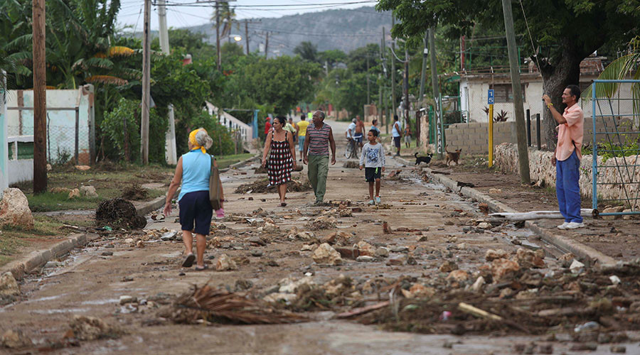

Une véritable catastrophe
L'ouragan Matthew (un ouragan de catégorie 5) a frappé l'île Hispaniola le 4 Octobre 2016. Il a fait entre 546 et 1000 morts à Haïti et 4 morts en République Dominicaine. Les services de santé de Haïti ont été détruit suite au passage de l'ouragan. Notamment les centres de traitement du choléra. Le gouvernement a des difficultés pour relever les établissements de santé. Sur 74 établissements de traitement du choléra et des diarrhées aiguës en Haïti, 34 sont encore opérationnels et prêt à reçevoir des patients tandis que 40 ont subit des dégâts d'une intensité plus ou moins grande. Le ministère est appuyé de nombreuses ONG dans sa démarche de reconstruire ses établissements de santé. Les autorités déclare que 175 509 Haïtiens vivent encore dans des abris suite à l'ouragan et que plus de 1,4 million de personnes ont besoin d'aide humanitaire de façon urgente. Une campagne de vaccination a commencé le 8 novembre 2016 et a pour but de vacciner 820 000 personnes habitant dans les 16 communes touchées par l'ouragan Matthew et présentant des signalements de Choléra ou des décès liés au Choléra. On voit bien que tout est mis en oeuvre pour aider les victimes de l'ouragan à avoir accès au soin et pour éviter la prolifération de Choléra dû aux conditions extrêmes. Pour mesurer l'impact et l'ampleur des dégâts de l'ouragan, nous vous proposons de visionner cette vidéo de 45 secondes prise en drone montrant des zones touchées par l'ouragan :
